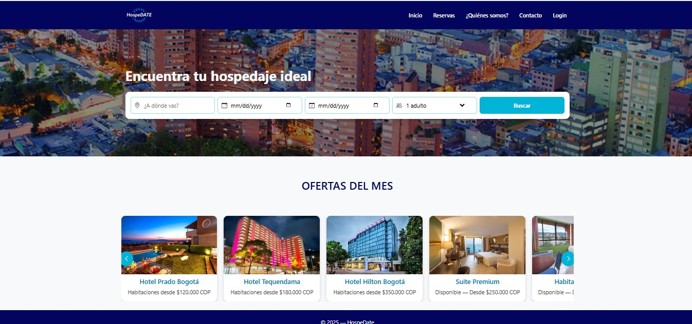

Juan Sebastian Nieto Diaz

Desarrollador Backend Java (Junior)
Ingeniero de sistemas en formación con enfoque en desarrollo backend. Experiencia en aplicaciones web, control de versiones y entornos de soporte técnico. Comprometido con la calidad, el aprendizaje continuo y el trabajo en equipo.
Contacto
Experiencia Laboral
Teleperformance Colombia S.A.S
Agente de Atención al Cliente – Mercado Libre Abril 2022 – Octubre 2024- Brindé atención al cliente resolviendo consultas técnicas, logísticas y comerciales, gestionando en promedio 30+ casos diarios.
- Cumplí y mantuve KPIs de calidad, satisfacción y tiempos de respuesta, alcanzando niveles de cumplimiento superiores al 95%.
- Analicé requerimientos y gestioné casos complejos, logrando la resolución en el primer contacto en la mayoría de los casos.
- Propuse mejoras operativas y entregué feedback para optimizar procesos internos y experiencia del usuario.
Habilidades Técnicas
Java
JavaScript
Spring Boot (básico)
MySQL (básico)
Git
GitHub
VS Code
Trabajo en equipo
Análisis de requerimientos
Resolución de problemas
Hoja de Vida
Puedes visualizar o descargar mi hoja de vida actualizada en formato PDF.
Proyectos

hospeDATE – Gestión de Hospedaje
Aplicación web para la gestión de reservas de habitaciones, usuarios y disponibilidad.
HTML
CSS
JavaScript
LocalStorage